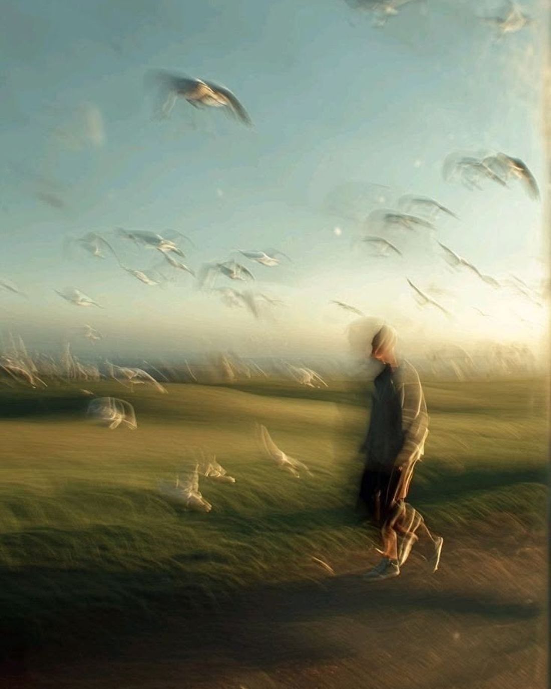

Ruido
Todo lo que llevamos dentro y no siempre decimos: cansancio, preguntas, culpa, prisa, quebranto. No lo escondemos; lo nombramos delante de Dios.
Nosotros
Del ruido interior a la intimidad con Dios.
Una plataforma espiritual y creativa para quienes buscan a Dios en medio de procesos reales. Cada semana compartimos la Palabra, un devocional y piezas visuales que invitan a detenerse, escuchar y volver a Cristo.

01 El nombre
Ruido
Todo lo que llevamos dentro y no siempre decimos: cansancio, preguntas, culpa, prisa, quebranto. No lo escondemos; lo nombramos delante de Dios.
Íntimo
El lugar donde Dios nos encuentra. No una técnica ni una emoción pasajera, sino una relación con Cristo que se cultiva en Su Palabra, en la oración y en la adoración.
Mi adoración no se enciende por el amor que yo tengo a Dios, sino cuando comprendo cuánto me ha amado Él primero.
02 Qué encontrarás
Un pasaje para meditar, con su contexto y concordancias.
Ir a Hoy → 02Una reflexión bíblica en formato de lectura web y PDF descargable.
Ver archivo → 03Versículos, frases y fotografía para llevar la Palabra a lo cotidiano.
@ruidointimo → 04Devocionales en video y lecturas en voz alta. Próximamente.
Ver videos →03 Para quién
No necesitas llegar con todo resuelto. Ruido Íntimo es para quien está cansado, para quien adora, para quien duda, para quien empieza de nuevo.
«…porque cuando soy débil, entonces soy fuerte.»
04 Lo que nos guía
Todo lo que compartimos busca llevar a Cristo, no solo a la autosuperación.
Citamos libro, capítulo, versículo y versión, y cuidamos el sentido del texto.
Hablamos de debilidad, espera y quebranto sin respuestas fáciles.
Cuidamos cada pieza porque la forma también comunica lo que creemos.
05 Desde Instagram
Comunidad
Ruido Íntimo también es una comunidad que lee, ora y comparte. Elige cómo sumarte.
Versículos, frases y devocionales cada semana.
SeguirDevocionales en video y lecturas en voz alta. Próximamente.
Ir al canalEscríbenos por mensaje privado. Leemos cada mensaje con cuidado y oramos por ti.
Enviar mensajeEnvía Ruido Íntimo a alguien que necesite detenerse hoy.
Si estás atravesando un momento muy difícil, no lo vivas a solas: busca también el acompañamiento de tu iglesia local o de un profesional de la salud.